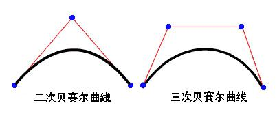
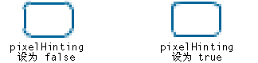
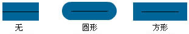

Display.createGraphic.graphics
目录 |
beginFill
public function beginFill(color:uint, alpha:Number = 1.0):void
- 指定一种简单的单一颜色填充，可将该填充用于随后调用对象的其它 Graphics 方法（如 lineTo() 或 drawCircle()）。 该填充将保持有效，直到您调用 beginFill() 或 beginGradientFill() 方法。 调用 clear() 方法会清除填充。
- 在调用 endFill() 方法之前，不会呈现填充。
参数
- color:uint — 填充的颜色 (0xRRGGBB)。
- alpha:Number (default = 1.0) — 填充的 Alpha 值（从 0.0 到 1.0）。
beginGradientFill
public function beginGradientFill(type:String, colors:Array, alphas:Array, ratios:Array, matrix:Matrix = null, spreadMethod:String = "pad", interpolationMethod:String = "rgb", focalPointRatio:Number = 0):void
- 指定一种渐变填充，可将该填充用于随后调用对象的其它 Graphics 方法（如 lineTo() 或 drawCircle()）。 该填充将保持有效，直到您调用 beginFill() 或 beginGradientFill() 方法。 调用 clear() 方法会清除填充。
- 在调用 endFill() 方法之前，不会呈现填充。
参数
- type:String — 用于指定要使用哪种渐变类型的 GradientType 值：linear 或 radial。
- colors:Array — 要在渐变中使用的 RGB 十六进制颜色值数组（例如，红色为 0xFF0000，蓝色为 0x0000FF，等等）。 可以至多指定 15 种颜色。 对于每种颜色，请确保在 alphas 和 ratios 参数中指定对应的值。
- alphas:Array — colors 数组中对应颜色的 alpha 值数组；有效值为 0 到 1。 如果值小于 0，则默认值为 0。 如果值大于 1，则默认值为 1。
- ratios:Array — 颜色分布比例的数组；有效值为 0 到 255。 该值定义 100% 采样的颜色所在位置的宽度百分比。 值 0 表示渐变框中的左侧位置，255 表示渐变框中的右侧位置。
- 注意：该值表示渐变框中的位置，而不是最终渐变的坐标空间，坐标空间可能比渐变框宽或窄。 为 colors 参数中的每个值指定一个值。
- 例如，对于包括蓝和绿两种颜色的线性渐变，下例显示了基于不同 ratios 数组值的渐变中的颜色配比：
| ratios | 渐变 |
|---|---|
| [0, 127] | 
|
| [0, 255] | 
|
| [127, 255] | 
|
- 数组中的值必须持续增加；例如，[0, 63, 127, 190, 255]。
- matrix:Matrix (default = null) — 一个由 Matrix 类定义的转换矩阵。 Matrix 类包括 createGradientBox() 方法，通过该方法可以方便地设置矩阵，以便与 beginGradientFill() 方法一起使用，亦可使用$.createGradientBox()。
- spreadMethod:String (default = "pad") — 用于指定要使用哪种 spread 方法的 值：pad、reflect 或 repeat。
例如，请考虑两种颜色之间的简单线性渐变：
var g = $.createShape({x:0,y:0,lifeTime:3});
var colors = [0xFF0000, 0x0000FF];
var alphas = [1, 1];
var ratios = [0x00, 0xFF];
var matr = $.createMatrix();
matr.createGradientBox(20, 20, 0, 0, 0);
g.graphics.beginGradientFill("linear", colors, alphas, ratios, matr, "pad");
g.graphics.drawRect(0,0,100,100);
- 此示例将 pad 用于 spread 方法，并且渐变填充看起来将类似于下图：
- 如果将 reflect 用于 spread 方法，则渐变填充看起来将类似于下图：
- 如果将 repeat 用于 spread 方法，则渐变填充看起来将类似于下图：
- interpolationMethod:String (default = "rgb") — 用于指定要使用哪个值的 值：linearRGB 或 rgb
例如，假设有两种颜色之间的简单线性渐变（spreadMethod 参数设置为 reflect）。 不同的插值方法对外观的影响如下所示：

|

|
| linearRGB | rgb |
- focalPointRatio:Number (default = 0) — 一个控制渐变的焦点位置的数字。 0 表示焦点位于中心。 1 表示焦点位于渐变圆的一条边界上。 -1 表示焦点位于渐变圆的另一条边界上。 小于 -1 或大于 1 的值将舍入为 -1 或 1。 例如，下例显示 focalPointRatio 设置为 0.75：

clear
public function clear():void
- 清除绘制到此 Graphics 对象的图形，并重置填充和线条样式设置。
curveTo
public function curveTo(controlX:Number, controlY:Number, anchorX:Number, anchorY:Number):void
- 通过由 (controlX, controlY) 指定的控制点，使用当前线条样式绘制一条从当前绘画位置开始到 (anchorX, anchorY) 结束的曲线。 当前绘画位置随后设置为 (anchorX, anchorY)。 如果正在其中绘制的影片剪辑包含用 Flash 绘画工具创建的内容，则调用 curveTo() 方法将在该内容下面进行绘制。 如果在调用 moveTo() 方法之前调用了 curveTo() 方法，则当前绘画位置的默认值为 (0, 0)。 如果缺少任何一个参数，则此方法将失败，并且当前绘画位置不改变。
- 绘制的曲线是二次贝塞尔曲线。 二次贝塞尔曲线包含两个锚点和一个控制点。 该曲线内插这两个锚点，并向控制点弯曲。
- 
参数
- controlX:Number — 一个数字，指定控制点相对于父显示对象注册点的水平位置。
- controlY:Number — 一个数字，指定控制点相对于父显示对象注册点的垂直位置。
- anchorX:Number — 一个数字，指定下一个锚点相对于父显示对象注册点的水平位置。
- anchorY:Number — 一个数字，指定下一个锚点相对于父显示对象注册点的垂直位置。
示例
下面的示例在显示对象注册点 (0, 0) 右侧 250 个像素的位置绘制一个绿色圆形对象，宽度和高度为 100 个像素。 绘制 4 条曲线以生成一个圆，并将其填充为绿色。
请注意，由于二次贝塞尔方程式所具有的特性，此对象并不是完美的圆。 绘制圆的最佳方法是使用 Graphics 类的 drawCircle() 方法。
var g = $.createShape({lifeTime:2,x:10,y:250});
g.graphics.beginFill(0xFFCC00);
g.graphics.moveTo(250, 0);
g.graphics.curveTo(300, 0, 300, 50);
g.graphics.curveTo(300, 100, 250, 100);
g.graphics.curveTo(200, 100, 200, 50);
g.graphics.curveTo(200, 0, 250, 0);
g.graphics.endFill();
下面的示例使用 curveTo() 方法绘制一个新月。
绘制两条 1 个像素粗的曲线，并将两条曲线之间的区域填充为白色。 moveTo() 方法用于将当前绘制位置放在坐标 (100, 100) 上。 第一条曲线将绘制位置移到 (100, 200)，这是其目标点。 第二条曲线将该位置恢复为开始位置 (100, 100)，这是其目标点。 水平控制点决定了不同的曲线大小。
var newMoon = $.createShape({lifeTime:2,x:0,y:0});
newMoon.graphics.lineStyle(1, 0);
newMoon.graphics.beginFill(0xFFFFFF);
newMoon.graphics.moveTo(100, 100);
newMoon.graphics.curveTo(30, 150, 100, 200);
newMoon.graphics.curveTo(50, 150, 100, 100);
newMoon.graphics.endFill();
下面的示例使用 curveTo() 方法绘制一把扇。
function drawArc(r,ang,color,rttz) {
var myObj = $.createShape({x:270,y:200,lifeTime:3});
myObj.graphics.beginFill(color);
myObj.graphics.lineStyle(1);
var a=ang/180*Math.PI/0.01;
myObj.graphics.lineTo(r,0);
for (var i=0; i<=a; i++) {
myObj.graphics.curveTo(Math.cos((i-0.5)*0.01)*r,Math.sin((i-0.5)*0.01)*r,Math.cos(i*0.01)*r,Math.sin(i*0.01)*r);
}
myObj.graphics.endFill();
myObj.rotationZ=rttz;
};
drawArc(100,120,0xff99ff,-150);
drawArc(30,120,0xff99ff,30);
drawCircle
public function drawCircle(x:Number, y:Number, radius:Number):void
- 绘制一个圆。 您必须在调用 drawCircle() 方法之前，通过调用 linestyle()、lineGradientStyle()、beginFill() 或 beginGradientFill() 方法来设置线条样式和/或填充。
参数
- x:Number — 相对于父显示对象注册点的圆心的 x 位置（以像素为单位）。
- y:Number — 相对于父显示对象注册点的圆心的 y 位置（以像素为单位）。
- radius:Number — 圆的半径（以像素为单位）。
drawEllipse
public function drawEllipse(x:Number, y:Number, width:Number, height:Number):void
- 绘制一个椭圆。 您必须在调用 drawEllipse() 方法之前，通过调用 linestyle()、lineGradientStyle()、beginFill() 或 beginGradientFill() 方法来设置线条样式和/或填充。
参数=
- x:Number — 相对于父显示对象注册点的椭圆圆心的 x 位置（以像素为单位）。
- y:Number — 相对于父显示对象注册点的椭圆圆心的 y 位置（以像素为单位）。
- width:Number — 椭圆的宽度（以像素为单位）。
- height:Number — 椭圆的高度（以像素为单位）。
示例
下面的示例使用 drawEgg() 函数绘制三个不同大小的鸡蛋（三种尺寸的椭圆），具体取决于 eggSize 参数。 构造函数调用 drawEgg() 函数，并为应该绘制鸡蛋的位置传递水平和垂直参数以及鸡蛋类型 (eggSize)。 （可使用鸡蛋（椭圆形）高度和宽度来确定其显示位置。） drawEgg() 函数绘制不同大小的椭圆，并使用 beginFill() 方法将其填充为白色。 没有事先为此函数编写错误处理代码。
var SMALL = 0;
var MEDIUM = 1;
var LARGE = 2;
function drawEgg(eggSize, x, y) {
var myEgg = $.createShape({x:0,y:0,lifeTime:3});
myEgg.graphics.beginFill(0xFFFFFF);
myEgg.graphics.lineStyle(1);
switch(eggSize) {
case SMALL:
myEgg.graphics.drawEllipse(x, y, 60, 70);
break;
case MEDIUM:
myEgg.graphics.drawEllipse(x, y, 120, 150);
break;
case LARGE:
myEgg.graphics.drawEllipse(x, y, 150, 200);
break;
default:
trace ("Wrong size! There is no egg.");
break;
}
myEgg.graphics.endFill();
}
drawEgg(SMALL, 0, 100);
drawEgg(MEDIUM, 100, 60);
drawEgg(LARGE, 250, 35);
drawRect
public function drawRect(x:Number, y:Number, width:Number, height:Number):void
- 绘制一个矩形。 您必须在调用 drawRect() 方法之前，通过调用 linestyle()、lineGradientStyle()、beginFill() 或 beginGradientFill() 方法来设置线条样式和/或填充。
参数
- x:Number — 一个表示相对于父显示对象注册点的水平位置的数字（以像素为单位）。
- y:Number — 一个表示相对于父显示对象注册点的垂直位置的数字（以像素为单位）。
- width:Number — 矩形的宽度（以像素为单位）。
- height:Number — 矩形的高度（以像素为单位）。
drawRoundRect
public function drawRoundRect(x:Number, y:Number, width:Number, height:Number, ellipseWidth:Number, ellipseHeight:Number):void
- 绘制一个圆角矩形。 您必须在调用 drawRoundRect() 方法之前，通过调用 linestyle()、lineGradientStyle()、beginFill() 或 beginGradientFill() 方法来设置线条样式和/或填充。
参数
- x:Number — 一个表示相对于父显示对象注册点的水平位置的数字（以像素为单位）。
- y:Number — 一个表示相对于父显示对象注册点的垂直位置的数字（以像素为单位）。
- width:Number — 圆角矩形的宽度（以像素为单位）。
- height:Number — 圆角矩形的高度（以像素为单位）。
- ellipseWidth:Number — 用于绘制圆角的椭圆的宽度（以像素为单位）。
- ellipseHeight:Number — 用于绘制圆角的椭圆的高度（以像素为单位）。 （可选）如果未指定值，则默认值与为 ellipseWidth 参数提供的值相匹配。
endFill
public function endFill():void
- 对从上一次调用 beginFill() 或 beginGradientFill() 方法之后添加的直线和曲线应用填充。 Flash 使用的是对 beginFill() 或 beginGradientFill() 方法的先前调用中指定的填充。 如果当前绘画位置不等于 moveTo() 方法中指定的上一个位置，而且定义了填充，则用线条闭合该路径，然后进行填充。
lineGradientStyle
public function lineGradientStyle(type:String, colors:Array, alphas:Array, ratios:Array, matrix:Matrix = null, spreadMethod:String = "pad", interpolationMethod:String = "rgb", focalPointRatio:Number = 0):void
- 指定一种线条样式的渐变，Flash Player 可将该渐变用于随后调用对象的其它 Graphics 方法（如 lineTo() 或 drawCircle()）。 线条样式仍然有效，直到使用不同的参数调用 lineStyle() 方法或 lineGradientStyle() 方法为止。 可以在绘制路径的中间调用 lineGradientStyle() 方法以为路径中的不同线段指定不同的样式。
- 在调用 lineGradientStyle() 之前调用 lineStyle() 以启用笔触，否则线条样式的值仍然是 undefined。
- 调用 clear() 会将线条样式设置回 undefined。
参数
- type:String — 用于指定要使用哪种渐变类型的 GradientType 类的值：GradientType.LINEAR 或 GradientType.RADIAL。
- colors:Array — 要在渐变中使用的 RGB 十六进制颜色值数组（例如，红色为 0xFF0000，蓝色为 0x0000FF 等等）。
- alphas:Array — colors 数组中对应颜色的 alpha 值数组；有效值为 0 到 100。 如果值小于 0，Flash Player 将使用 0。 如果值大于 100，Flash Player 将使用 100。
- ratios:Array — 颜色分布比率的数组；有效值为 0 到 255。 该值定义 100% 采样的颜色所在位置的宽度百分比。 值 0 表示渐变框中的左侧位置，255 表示渐变框中的右侧位置。 该值表示渐变框中的位置，而不是最终渐变的坐标空间，坐标空间可能比渐变框宽或窄。 为 colors 参数中的每个值指定一个值。
- 例如，对于包括蓝和绿两种颜色的线性渐变，下例显示了基于不同 ratios 数组值的渐变中的颜色配比：
| ratios | 渐变 |
|---|---|
| [0, 127] |
|
| [0, 255] |
|
| [127, 255] |
|
- 数组中的值必须持续增加；例如，[0, 63, 127, 190, 255]。
- matrix:Matrix (default = null) — 一个由 Matrix 类定义的转换矩阵。 Matrix 类包括 createGradientBox() 方法，通过该方法可以方便地设置矩阵，以便与 beginGradientFill() 方法一起使用，亦可使用$.createGradientBox()。
- spreadMethod:String (default = "pad") — 用于指定要使用哪种 spread 方法的 值：
 |
 |

|
| pad | reflect | repeat |
- interpolationMethod:String (default = "rgb") — 用于指定要使用哪个值的 值：linearRGB 或 rgb
例如，假设有两种颜色之间的简单线性渐变（spreadMethod 参数设置为 reflect）。 不同的插值方法对外观的影响如下所示：
|
|
|
| linearRGB | rgb |
- focalPointRatio:Number (default = 0) — 一个控制渐变的焦点位置的数字。 0 表示焦点位于中心。 1 表示焦点位于渐变圆的一条边界上。 -1 表示焦点位于渐变圆的另一条边界上。 小于 -1 或大于 1 的值将舍入为 -1 或 1。 例如，下例显示 focalPointRatio 设置为 0.75：
示例
- 下面的示例绘制一个矩形和一个圆，它们使用从红色到绿色、再到蓝色的渐变笔触。
- Matrix 类中的方法 createGradientBox() 用于将渐变框定义为 200 个像素宽、40 个像素高。 线条粗细设置为 5 个像素。 必须为 lineGradientStyle() 方法定义笔触粗细。 渐变设置为线性。 渐变颜色设置为红色、绿色和蓝色。 颜色透明度（Alpha 值）设置为 1（不透明）。 渐变的分布是均匀的，其中在 0（渐变框中的左侧位置）、128（渐变框的中间位置）和 255（渐变框中的右侧位置）处的颜色采样率为 100%。 矩形宽度范围内包含渐变的所有色谱；而圆包含色谱中间的 50%。
var g = $.createShape({lifeTime:3,x:50});
g.graphics.beginGradientFill("linear", [0xFF0000, 0x00FF00, 0x0000FF],[1,1,1],[0x00,0x7f,0xff] , $.createGradientBox(200, 40, 0, 0, 0));
g.graphics.drawRect(0,0,200,40);
g.graphics.drawCircle(100, 120, 50);
g.graphics.endFill();
lineStyle
public function lineStyle(thickness:Number, color:uint = 0, alpha:Number = 1.0, pixelHinting:Boolean = false, scaleMode:String = "normal", caps:String = null, joints:String = null, miterLimit:Number = 3):void
- 指定一种线条样式，Flash 可将该样式用于随后调用对象的其它 Graphics 方法（如 lineTo() 或 drawCircle()）。 线条样式仍然有效，直到使用不同的参数调用 lineGradientStyle() 方法或 lineStyle() 方法为止。 可以在绘制路径的中间调用 lineStyle()，以便为路径中的不同线段指定不同的样式。
- 注意：调用 clear() 方法会将线条样式设置回 undefined。
参数
- thickness:Number — 一个整数，以磅为单位表示线条的粗细；有效值为 0 到 255。 如果未指定数字，或者未定义该参数，则不绘制线条。 如果传递的值小于 0，则默认值为 0。 值 0 表示极细的粗细；最大粗细为 255。 如果传递的值大于 255，则默认值为 255。
- color:uint (default = 0) — 线条的十六进制颜色值（例如，红色为 0xFF0000，蓝色为 0x0000FF 等）。 如果未指明值，则默认值为 0x000000（黑色）。 可选。
- alpha:Number (default = 1.0) — 表示线条颜色的 Alpha 值的数字；有效值为 0 到 1。 如果未指明值，则默认值为 1（纯色）。 如果值小于 0，则默认值为 0。 如果值大于 1，则默认值为 1。
- pixelHinting:Boolean (default = false) — 用于指定是否提示笔触采用完整像素的布尔值。 它同时影响曲线锚点的位置以及线条笔触大小本身。 在 pixelHinting 设置为 true 的情况下，Flash Player 将提示线条宽度采用完整像素宽度。 在 pixelHinting 设置为 false 的情况下，对于曲线和直线可能会出现脱节。 例如，下图显示了 Flash Player 如何呈现两个相同的圆角矩形，不同之处是用于 lineStyle() 方法的 pixelHinting 参数设置不同（将图像放大 200% 以强调差异）：
- 
- 如果未提供值，则线条不使用像素提示。
- scaleMode:String (default = "normal") — 用于指定要使用哪种缩放模式的 LineScaleMode 类的值：
-
- normal -- 在缩放对象时总是缩放线条的粗细（默认值）。
- none -- 从不缩放线条粗细。
- vertical -- 如果仅 垂直缩放对象，则不缩放线条粗细。 例如，考虑下面的圆形，它们是用一个像素的线条绘制的，每个圆的 scaleMode 参数都被设置为 vertical。 左边的圆仅在垂直方向上缩放，而右边的圆则同时在垂直和水平方向上缩放：
- horizontal -- *如果仅 水平缩放对象，则不缩放线条粗细。 例如，考虑下面的圆形，它们是用一个像素的线条绘制的，每个圆的 scaleMode 参数都被设置为 horizontal。 左边的圆仅在水平方向上缩放，而右边的圆则同时在垂直和水平方向上缩放：


- caps:String (default = null) — 用于指定线条末端处端点类型的 CapsStyle 类的值。 有效值为：none、round 和 square。
如果未指示值，则 Flash 使用圆头端点。
- 例如，以下图示显示了不同的 capsStyle 设置。 对于每种设置，插图显示了一条粗细为 30 的蓝色线条（应用 capsStyle 的线条），以及重叠于其上的粗细为 1 的黑色线条（未应用 capsStyle 的线条）：
- 
- joints:String (default = null) — JointStyle 类的值，指定用于拐角的连接外观的类型。 有效值为：bevel、miter 和 round。
如果未指示值，则 Flash 使用圆角连接。
- 例如，以下图示显示了不同的 joints 设置。 对于每种设置，插图显示了一条粗细为 30 的带拐角的蓝色线条（应用 jointStyle 的线条），以及重叠于其上的粗细为 1 的带拐角的黑色线条（未应用 jointStyle 的线条）：
- 注意：对于设置为 JointStyle.MITER 的 joints，您可以使用 miterLimit 参数限制尖角的长度。
- miterLimit:Number (default = 3) — 一个表示将在哪个限制位置切断尖角的数字。 有效值的范围是 1 到 255（超出该范围的值将舍入为 1 或 255）。
此值只可用于 jointStyle 设置为 "miter" 的情况下。 miterLimit 值表示向外延伸的尖角可以超出角边相交所形成的结合点的长度。 此值表示为线条 thickness 的因子。
例如，miterLimit 因子为 2.5 且 thickness 为 10 像素时，尖角将在 25 像素处切断。
- 例如，请考虑下列带拐角的线条，每个线条都以 thickness 20 进行绘制，但它们的 miterLimit 分别设置为 1、2 和 4。 重叠在其上的黑色参考线条显示了结合处的联结点：

- 请注意，对于给定的 miterLimit 值，会有一个被切断的尖角的特定最大角度。 下表列出了部分示例：
| miterLimit 值： | 小于此角度将被切断： |
|---|---|
| 1.414 | 90 度 |
| 2 | 60 度 |
| 4 | 30 度 |
| 8 | 15 度 |
lineTo
public function lineTo(x:Number, y:Number):void
- 使用当前线条样式绘制一条从当前绘画位置开始到 (x, y) 结束的直线；当前绘画位置随后会设置为 (x, y)。 如果正在其中绘制的显示对象包含用 Flash 绘画工具创建的内容，则调用 lineTo() 方法将在该内容下面进行绘制。 如果在对 moveTo() 方法进行任何调用之前调用了 lineTo()，则当前绘画的默认位置为 (0, 0)。 如果缺少任何一个参数，则此方法将失败，并且当前绘画位置不改变。
参数
- x:Number — 一个表示相对于父显示对象注册点的水平位置的数字（以像素为单位）。
- y:Number — 一个表示相对于父显示对象注册点的垂直位置的数字（以像素为单位）。
示例
- 下面的示例使用 lineTo() 方法绘制一个梯形，从像素 (100, 100) 开始。
- 线条粗细设置为 10 个像素，颜色为金色且不透明，线条终点设置为 none（因为联接了所有线条），两条线之间的联接点设置为 MITER 并将尖角限制设置为 10 以绘制尖锐的边角。
var trapezoid = $.createShape({lifeTime:2,x:250,y:0});
trapezoid.graphics.lineStyle(10, 0xFFD700, 1, false, "vertical","none", "miter", 10);
trapezoid.graphics.moveTo(100, 100);
trapezoid.graphics.lineTo(120, 50);
trapezoid.graphics.lineTo(200, 50);
trapezoid.graphics.lineTo(220, 100);
trapezoid.graphics.lineTo(100, 100);
moveTo
public function moveTo(x:Number, y:Number):void
- 将当前绘画位置移动到 (x, y)。 如果缺少任何一个参数，则此方法将失败，并且当前绘画位置不改变。
参数
- x:Number — 一个表示相对于父显示对象注册点的水平位置的数字（以像素为单位）。
- y:Number — 一个表示相对于父显示对象注册点的垂直位置的数字（以像素为单位）。
示例
- 下面的示例使用 moveTo() 和 lineTo() 方法绘制一条 3 个像素粗的虚线。
- 通过使用 lineStyle() 方法，将线条粗细设置为 3 个像素。 还将其设置为不进行缩放。 颜色设置为红色，并且不透明度为 25%。 CapsStyle 属性设置为 square（默认值为 round）。
var trapezoid = $.createShape({lifeTime:2,x:250,y:0});
trapezoid.graphics.lineStyle(3, 0x990000, 0.25, false,"none","square");
trapezoid.graphics.moveTo(10, 20);
trapezoid.graphics.lineTo(20, 20);
trapezoid.graphics.moveTo(30, 20);
trapezoid.graphics.lineTo(50, 20);
trapezoid.graphics.moveTo(60, 20);
trapezoid.graphics.lineTo(80, 20);
trapezoid.graphics.moveTo(90, 20);
trapezoid.graphics.lineTo(110, 20);
trapezoid.graphics.moveTo(120, 20);
trapezoid.graphics.lineTo(130, 20);